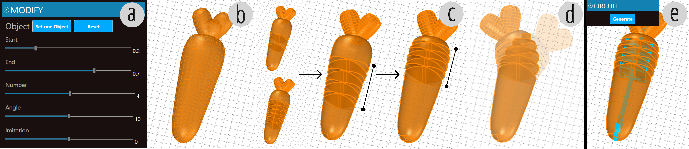

DOI PDF
Integrating Motion Sensing into 3D-Printed Bending Structures

Figure 1. (a) Multi-material printing; (b) Electronic components with conductive filaments; (c) Connect the physical and digital worlds; (d) Application for physical visualization; (e) Application for custom game controller.
ABSTRACT
We present a design and fabrication method for converting static 3D models into motion-capable, self-sensing structures using multi-material FDM 3D printing. Our method allows users to configure deformation behaviors, automatically generate printable circuits, and fabricate interactive objects using 3D printing in a single step without post-assembly or manual sensor integration. The 3D-printed circuits enable real-time detection of bending motions through a time-division multiplexing (TDM) circuit scheme. We demonstrate the effectiveness of our approach through sensing performance evaluation and several application examples.
INTRODUCTION
Human-Computer Interaction has long explored ways to connect the physical and digital worlds. Previous works have investigated shape-changing interfaces augmented with sensors to enable closed-loop interaction. For example, MorphIO combines pneumatic actuation with conductive foam to enable programmable deformation and real-time sensing, while Sensing Through Structure embeds circuits within silicone to directly convert physical deformation into electrical signals. Although these methods enable large deformations and expressive interactions, they typically require manual circuit embedding and casting, leading to high labor costs and barriers for non-expert users.
Recent advances in conductive materials and multi-material FDM 3D printing have enabled the direct integration of sensing circuits into printed geometries without complex post-processing. Some studies have explored this possibility, embedding touch, pressure, or deformation sensors into printed artifacts. Although they reduce manual labor, material and design constraints still limit their deformation range compared to silicone or foam.
To address this limitation, we propose a design and fabrication method that embeds compliant mechanism into geometric structures via one-step multi-material 3D printing with conductive filaments, which allows larger bending deformations to be sensed. Inspired by the structure of a spine, our design supports multi-joint bending and captures bending states between any two joints. By combining a time-division multiplexing (TDM) circuit scheme with multi-material 3D printing, our approach fabricates both geometry and circuits in a single print. The conductive paths are encapsulated by non-conductive material, which prevents exposure, enhances structural integrity and safety, and also serves as a functional component of the mechanism. This method eliminates post-assembly and manual sensor integration, significantly reducing fabrication labor. Through several application examples, we demonstrate the potential of this method to support rich interaction with enhanced fabrication efficiency.
Laying out the circuit for the mechanism
In 3D-printed compliant mechanisms, motion is typically enabled by flexure hinges, which are formed by overhanging bridges connecting separate rigid segments.
In this work, we employ conductive TPU to directly embed self-sensing capability into compliant mechanisms. Specifically, we design and 3D print three kinds of electronic components with conductive filaments (Figure 1b): (1) Circuit, (2) Contact Pad, and (3) Pin Connector.
Circuit: Circuits run vertically along the structure's central axis, acting as a “spine” that both supports bending and enables signal transmission. To avoid short circuits, conductive paths are layered at different Z-heights and isolated with non-conductive PLA.
Contact Pad: Contact pads act as sensing terminals and are placed on both sides of each cut-out. When the structure bends, they touch each other, connecting circuits at different Z-heights and forming contact switches that generate clear on/off signals.
Pin Connector: Each circuit ends in a pin connector with a Ø0.8mm hole, providing a standard interface for connecting wires to a microcontroller.
To coordinate these components, we adopt a time-division multiplexing (TDM) circuit scheme. For a structure with $n$ pairs of cut-outs, one conductive path runs along the left side and another along the right, each connecting to one contact pad of every cut-out to serve as emitters. Additionally, $n$ receiver paths bridge the corresponding touching pads on the left and right sides and connect to the analog inputs of a microcontroller. When the structure bends, the paired touching pads come into contact, closing the circuit.

Figure 2. Design Tool for our method: (a) Design tool interface; (b) import model; (c) choose the deformation parameters; (d) generate circuit.
Parametric Design
Using Grasshopper, we developed a design tool (Figure 2a) to streamline creating self-sensing bending structures. It allows users to convert static 3D models into editable meshes, define deformable regions, and adjust motion parameters such as cut count and spacing. It also provides real-time simulation to support iterative refinement.
Once the motion design is complete (Figure 2b-d), users can switch to circuit mode (Figure 2e), where circuits are automatically generated based on the motion layout. The tool ensures exporting fabrication-ready geometry for multi-material FDM 3D printing.
FabricationOur method requires a multi-material 3D printer to fabricate both conductive and non-conductive components in a single print. In this work, we use the Bambu Lab H2D, printing the sensing circuits with 1.75mm Conductive Filaflex TPU at 30mm/s and other parts with Bambu Basic PLA at 300mm/s.
EVALUATION
We evaluated the structure's sensing performance by testing its ability to distinguish real-time bending patterns. The test piece (Figure 3a) has two symmetric sides forming a 2x4 sensing matrix. Sensing was implemented using a time-division multiplexing (TDM) scheme on an ESP32 microcontroller: two emitter lines were activated sequentially, and four receivers on ADC1 channels capture voltages every 200 ms(Figure 3b).
We first tested single-point contacts to assess spatial resolution and repeatability. Each site was activated five times, resulting in clear, localized responses. However, minor crosstalk was present, which may have been caused by printing artifacts or pressure dispersion (Figure 3c). We then tested four compound bending gestures to demonstrate reliable multi-point pattern recognition, confirming the system's embedded sensing capability (Figure 3d).

Figure 3. (a) Test piece, (b) Wiring switches, (c) Single-point contact experiment, (d) Multi-point contact experiment.
To demonstrate the potential of our method in supporting rich interactive behaviors, we developed two application examples.
Physical Visualization.Fidget toys help manage stress and maintain emotional balance through simple tactile interaction. We designed and fabricated an integrated carrot-shaped fidget toy that senses and logs bending (Figure 1d). Repeated bending metaphorically “pulls out a carrot,” symbolizing stress relief, while the logged data visually reflects the user's mental state.
Custom Game Controller.We designed a custom controller for a game themed with lizards (Figure 1e), where players bend a physical lizard-shaped structure left or right to steer a digital lizard . This controller supports two degrees of turning: slight turns and full turns. Any new character can be rapidly fabricated as an integrated print, enabling seamless synchronization between the physical controller and its digital counterpart. This form of tightly coupled game-specific input demonstrates the potential of our method for creating highly customized interactive game devices.
DISCUSSION AND FUTURE WORKOur method demonstrates the potential of using multi-material 3D printing to fabricate self-sensing bending structures from static models. Future work will explore path optimization to improve signal stability, reduce wiring through multiplexing, and extend support to other motions like twisting, compression, and shear.
This work was supported by MIT-GIST Joint Research Program.